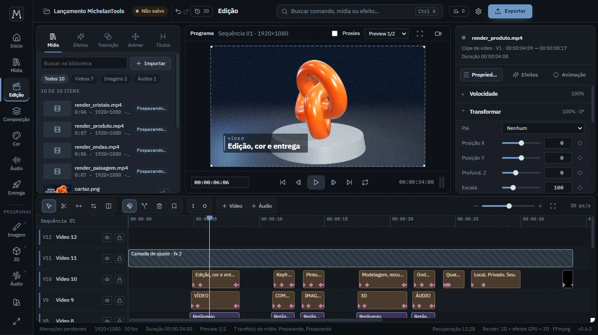

Câmara R · Edição
Edite por quadros, com o teclado nas mãos
Lâmina, slip, slide e roll a uma tecla, encaixe magnético, monitor de origem com entrada e saída, velocidade de 5% a 1600% com o quadro exato.
- Mídia, Edição, Composição, Cor, Áudio e Entrega na mesma janela
- Proxies e prévia em resolução reduzida
- Importa projetos de outros editores (EDL, FCPXML, OTIO, MLT)
- Monitor externo em tela cheia na segunda tela

Timeline